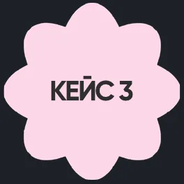
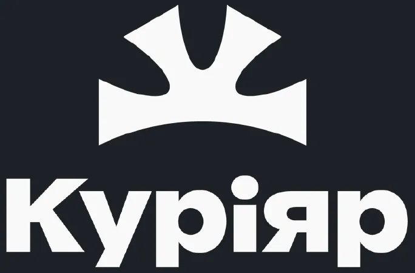
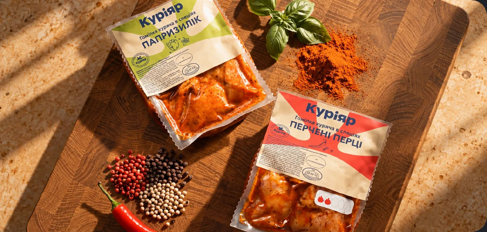
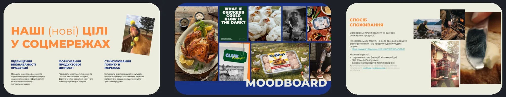
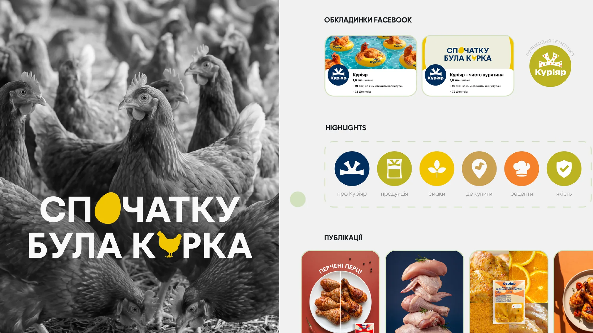
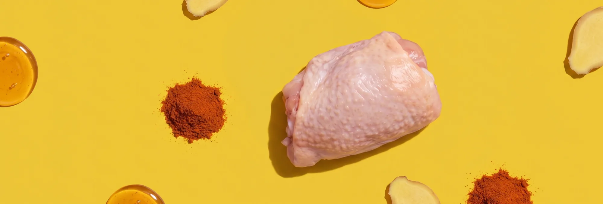

Від виробництва до вашої стрічки
×4 аудиторія в Instagram
- Ніша
- FMCG / Продукти та напої
- Послуги
- SMM-стратегія
- Комплексний SMM
- Креатив
- Продакшн
- Медіа та інфлюенс-маркетинг
- Інструменти
- AI Generation
- Meta Ads
- Фото- та відеопродакшн
Задача
Скільки можна говорити про курку? Виявилося, багато
Куріяр прийшов до нас із завданням побудувати системну присутність бренду в Instagram та Facebook. Але просто регулярно показувати курятину — не наш метод.
Ідея
Курятина — лише початок розмови
Ми адаптували бренд-стратегію до соцмереж: розробили SMM-стратегію, визначили принципи комунікації, візуальний напрям і контентні рубрики.
Так з’явилася система, у якій курятина — лише початок розмови. Далі — рецепти, виробництво, люди, партнери та креативні експерименти.


Виконання
Контент і продакшн
Знімаємо Куріяр там, де вирує його справжнє життя: на виробництві, у фірмових магазинах, офісі та на виїзних подіях. Показуємо не лише продукт, а й людей, процеси та історії, які стоять за брендом.
А коли реальності стає замало — підключаємо AI. Створюємо контент, експериментуємо із сюжетами та втілюємо ідеї, для яких звичайного знімального майданчика було б недостатньо.
Так у стрічці Куріяру поєднуються справжнє життя бренду та креатив, який виходить за його межі.
Результати
Результати співпраці
Системна робота зі стратегією, контентом, продакшном та креативами дає вимірювані результати. За час співпраці ми збільшили аудиторію в Instagram більш ніж у 4 рази, а у Facebook — у 3,5 раза.
І це не фінальні результати. Ми продовжуємо експериментувати з форматами, знаходити нові точки контакту з аудиторією та розвивати присутність бренду в соцмережах.
